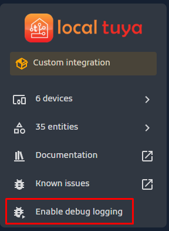
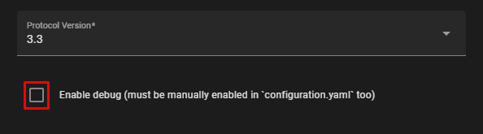

Report an issue
Whenever you write a bug report, it's incredibly helpful to include debug logs directly. Otherwise, we'll need to request them separately, prolonging the process. Please enable debug logs as shown and include them in your issue:
Enable from the UI
Via UI (1)
Reload integration after enabling the debug from the UI
- 
Enable from Configuration file
Configuration.yaml file Recommended
Add the below line into your configuration.yaml that located in HA config directory.
Note
Editing the configuration file will require an HA restart to apply the changes.
logger:
default: warning
logs:
custom_components.localtuya: debug
custom_components.localtuya.pytuya: debug
Enable device debug.
Then, edit the device that is showing problems and check the Enable debugging for this device (1)
- 